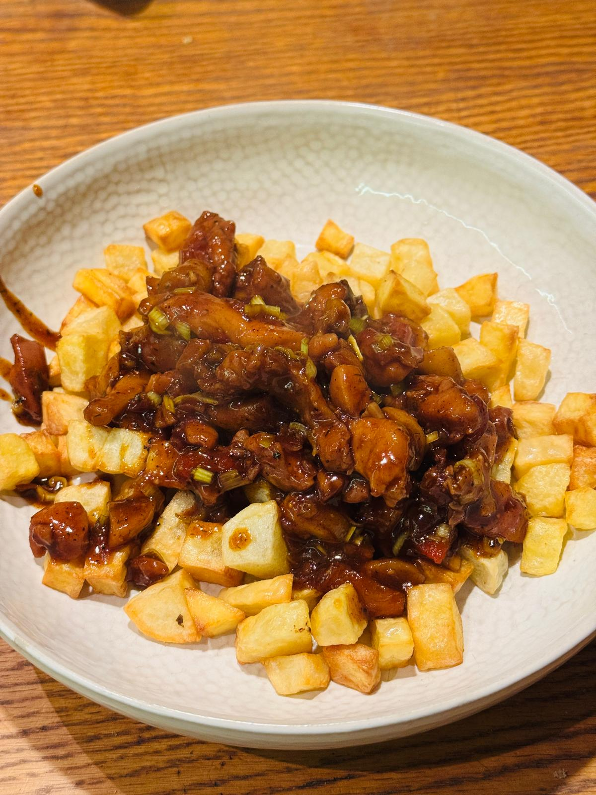

Iraklijs
Ingredients
- Chicken thighs
- Potatoes
- Champignons (mushrooms)
- Red onion
- Red sweet pepper
- Leek
Spices
- Oak'a Delicious Chicken
- Oak'a Sweet Garlic
- Oak'a SPG
- Oak'a Spicy BBQ
Sauces
- Oak'a Cherry glaze
- Oak'a Asian chilli sauce
Instructions
- Cut the chicken thighs into strips and start cooking.
- Finely slice the potatoes and cook them in an air fryer.
- Slice the mushrooms and add them to the chicken.
- Add red onion cut into half-rings to the chicken.
- Add red sweet pepper cut into long strips to the chicken.
- Finely chop the leek, but do not add it yet.
- Season with the spices: Delicious Chicken, Sweet Garlic, SPG, and Spicy BBQ.
- Add the sauces: cherry glaze and Asian chili sauce, and cook until everything is glazed.
- At the end, add the leek once everything is glazed.